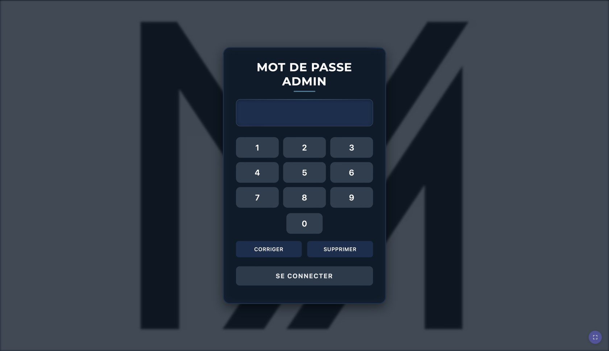
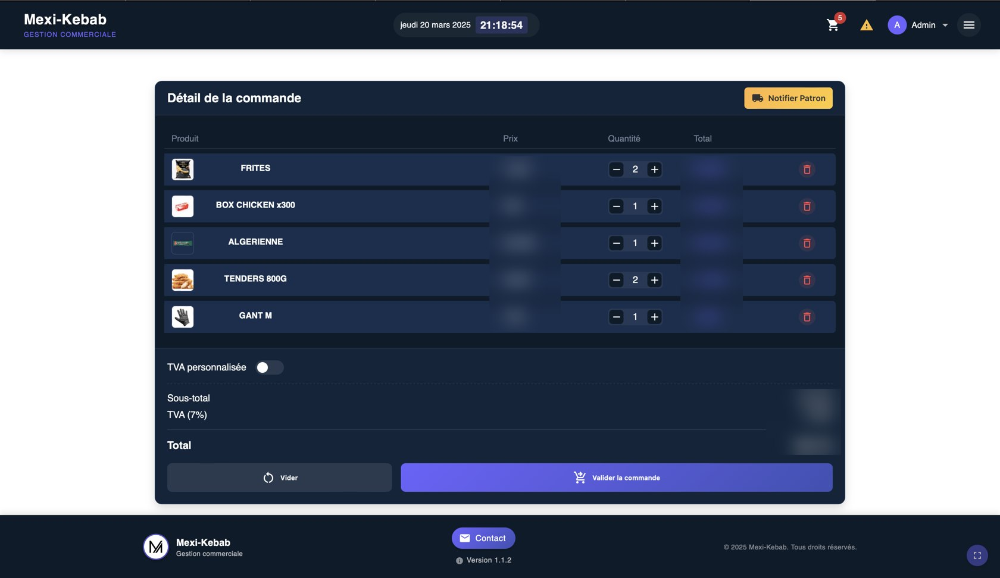
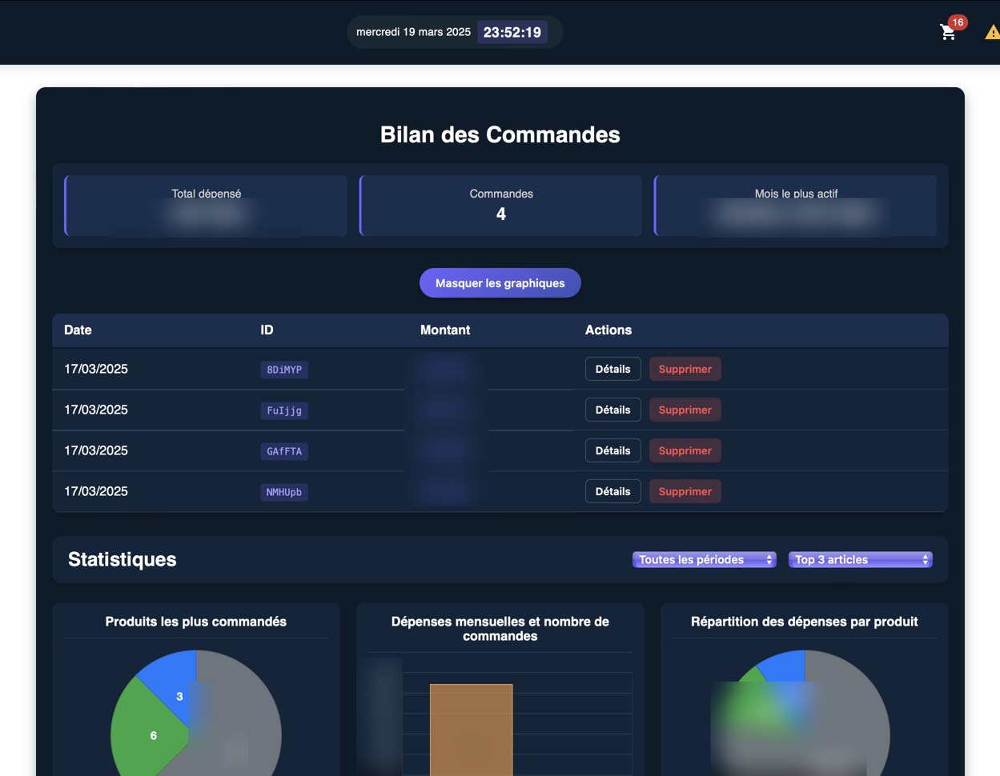
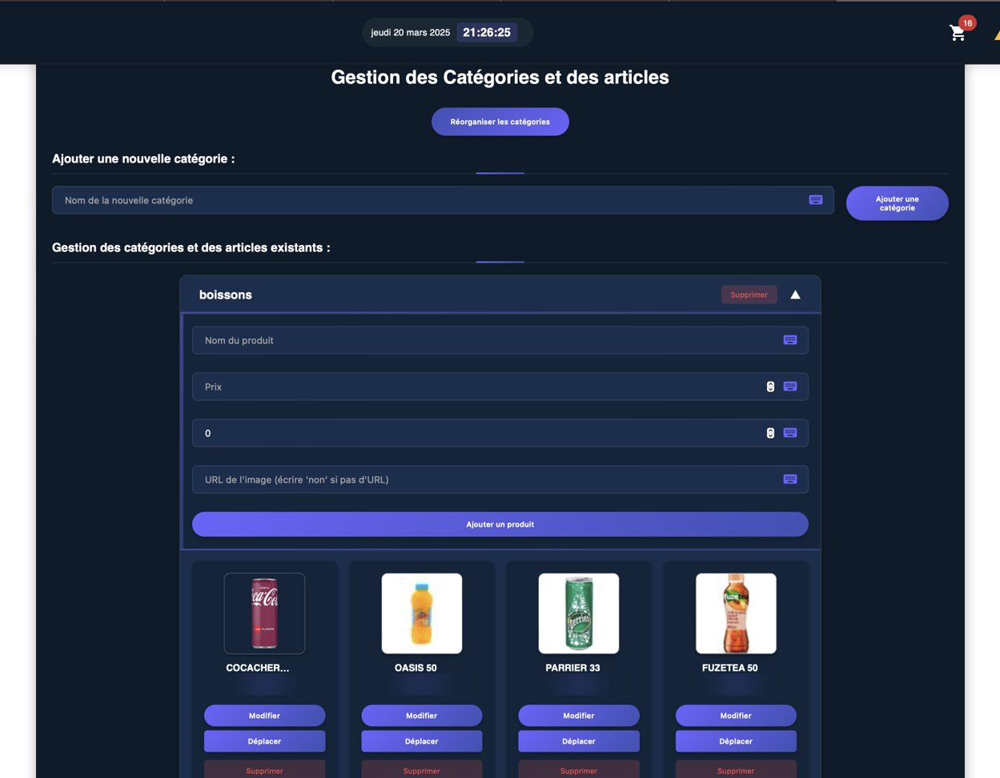
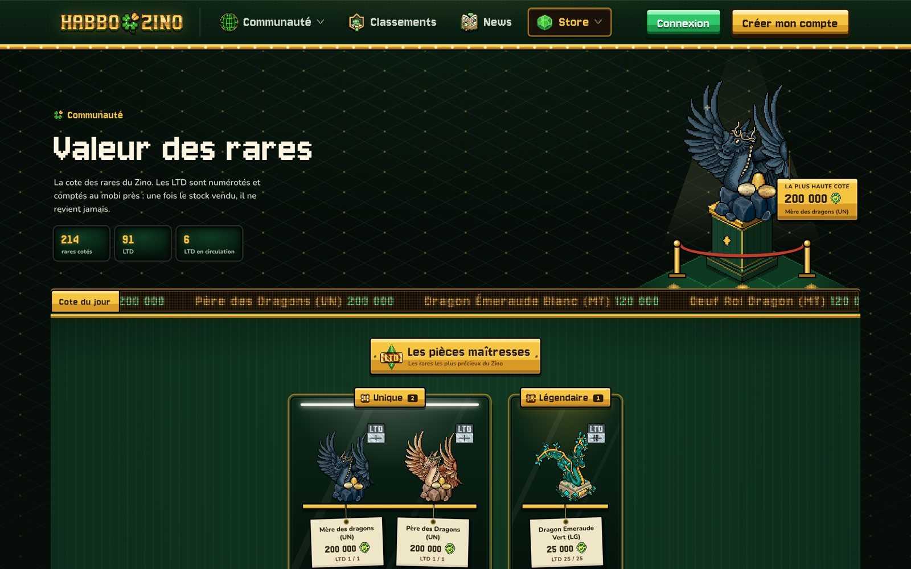

Portfolio · 2026
Yanis Moussi.
Développeur, informaticien de gestion, technicien support. En France et en Suisse.
jeudi 22 octobre
9:41
Favoris
Ce que vous ouvrez ici
- HabboZinoLe jeu social que j’ai monté à deux, ouvert ici même dans la tablette.
- GitHubIl refuse de s’afficher dans une autre page, il s’ouvre donc dans un nouvel onglet.
- Et le reste du webTapez une recherche en haut, Google répond ici même. Certains sites (YouTube, GitHub…) interdisent d’être affichés dans une autre page : ils s’ouvrent dans un nouvel onglet.
Alternance chez MEXI · oct. 2024 à juin 2025
My Orders
Le stock et les commandes fournisseurs, sur tablette, dans les trois restaurants de la chaîne MEXI KEBAB. Seul, de l’observation à la mise en production.







Quand un produit manquait
- Un employé le notait sur un carnet à souches
- Il photographiait la souche
- Il l’envoyait au dirigeant par messagerie
- Le dirigeant passait la commande
Sur trois semaines, j’ai compté 62 bons : 9 raturés ou illisibles, 4 sans quantité. Quand une livraison arrivait incomplète, personne ne pouvait prouver ce qui avait été commandé.
- Oct. 2024Sept séances d’observation dans les trois restaurants, entre les deux services.
- 30 oct. 2024Expression de besoin validée : 19 exigences, sur un recto.
- Nov. 2024Maquettes sur Figma, modèle de données dans Firestore. Le panier vit en base : toutes les tablettes voient le même.
- 19 févr. 2025Une refonte casse tout un soir. Dans la foulée : Git, préproduction à chaque pull request, production à la fusion par GitHub Actions.
- Mars 2025Pilote de six semaines : deux formations de 40 minutes, une fiche A4 plastifiée scotchée dans la réserve.
- Avril et mai 2025Deuxième et troisième restaurant, une demi-journée chacun.
- Écarts relevés à la réception−35 %
- Restaurants équipés3
- Mise en service des restaurants 2 et 3½ journée chacun
Comparaison de novembre 2024 à janvier 2025 avec avril à juin 2025. C’est le chiffre que je peux défendre ; les autres, avec leurs limites, je les explique en entretien.
Fiche technique
- InterfaceReact 18, Material UI
- DonnéesCloud Firestore
- InstallationAppli web installable (PWA)
- Mise en ligneGitHub Actions, Firebase Hosting
- BilansChart.js, exports PDF
Deuxième année d’alternance · juin 2025 à août 2026
Borne et cuisine
Une seule application pour trois postes : la borne où le client commande, le comptoir, et l’écran de la cuisine. Environ 9 500 lignes, en service à partir d’avril 2026.
Le paiement mixte
Le midi en semaine, d’après la responsable de salle, une commande sur cinq se paie en partie en titres-restaurant. Le module cumule les moyens de paiement et suit le reste dû en direct. Tous les calculs se font en centimes entiers, avec un seul arrondi à l’affichage.
Quatre horaires par commande
Création, paiement, premier et dernier sandwich validé. Le dirigeant a enfin son temps d’attente moyen, par restaurant et par tranche horaire.
Un écran lu à deux mètres
Taille du texte réglée sur place, à deux mètres, avec deux personnes de l’équipe dont une qui porte des lunettes. Un samedi de rush, les commandes les plus anciennes sont passées en page 2 sans que personne les voie. Signalé le lundi, corrigé le jour même : l’écran empile les commandes, avec un bandeau permanent pour celles de plus de 15 minutes.
Fiche technique
- InterfaceReact, Material UI
- DonnéesFirebase
- PostesBorne, comptoir, cuisine
Mars 2025 à août 2026 · environ un jour par semaine la deuxième année
Support
Après chaque mise en service, je suis resté le contact des trois restaurants jusqu’à la fin de mon alternance.
- FormerDeux séances de 40 minutes entre les services, une fiche A4 plastifiée, et un employé réticent devenu celui qui forme les saisonniers.
- TrierUn seul canal pour les signalements, avec l’heure, la tablette et l’écran affiché. Environ 40 par an, dont une dizaine de vrais défauts ; le reste, des demandes d’évolution, le wifi, une tablette déchargée.
- PrévenirAprès un correctif parti un vendredi soir en plein service : pas de mise en production après le jeudi midi, et toujours une préproduction sur une vraie tablette.
- ÉquiperAprès une tablette morte en plein service : une tablette de secours par restaurant, une procédure d’une page, un inventaire du parc.
- SauvegarderUn export chaque semaine, une restauration testée, une alerte de budget sur Firebase.
- TransmettreUn document de passation de 22 pages, remis en juillet 2026.
Projet de fin d’études, mené à deux · depuis oct. 2024
Un jeu social en ligne dans l’esprit de Habbo : des salles en vue isométrique, des avatars, des objets rares et une monnaie virtuelle. On s’est partagé chaque partie selon les moments, le serveur de jeu en Java comme le site et l’hébergement.


Ce qu’on a réglé
- Sans le code sourceLes objets en édition limitée recevaient des numéros de série au hasard. La version de l’émulateur qu’on utilise n’est distribuée que compilée : décompilation, puis trois corrections directement dans le bytecode Java.
- Trois entiersLes avatars n’apparaissaient plus. Le serveur envoyait trois champs de plus par avatar que le client ne lisait pas, tout le flux binaire suivant était décalé. Trois lectures ajoutées dans le parser du client.
- 100 % de CPUL’émulateur lisait son entrée en boucle sans gérer la fin de fichier. Une ligne dans le service systemd, puis des timeouts nginx et un keepalive TCP pour les joueurs inactifs.
- Double dépenseTrouvée en relisant le code : un verrou par joueur autour de chaque dépense, et des réclamations atomiques en base.
- La caméraLes photos ne se publiaient plus. Capture du trafic avec tcpdump, décodage des trames WebSocket : deux bugs côté client.
Fiche technique
- Serveur de jeuJava, plugins Arcturus
- ClientTypeScript, React, PixiJS
- SitePHP 8.4, Laravel, Filament
- HébergementUbuntu, nginx, MySQL, Cloudflare
Parcours
2026
- Bachelor Responsable de Projets InformatiquesSoutenance, diplômé. ISITECH Lyon.
- Fin de l’alternance chez MEXIDeux ans, trois semaines en entreprise et une à l’école.
- PassationUn document de 22 pages pour la personne suivante.
- Borne, comptoir et écran cuisine en service
- HabboZino ouvre au publicProjet de fin d’études mené à deux.
2025
- My Orders dans les trois restaurantsLe deuxième à la mi-avril, le troisième début mai, une demi-journée chacun.
- La règle du jeudi midiPlus de mise en production en fin de semaine.
- My Orders : le piloteSix semaines dans un premier restaurant, deux formations de 40 minutes.
- My Orders : Git et GitHub ActionsPréproduction à chaque pull request, mise en ligne à la fusion.
2024
- My Orders : maquettes et donnéesÉcrans sur Figma, modèle de données dans Firestore.
- My Orders : observationSept séances dans les trois restaurants, une expression de besoin validée le 30.
- Premier jour chez MEXIAlternant au service informatique, une équipe de trois.
2023
- Entrée à ISITECH LyonBachelor Responsable de Projets Informatiques.
Photos
Des captures de ce que j’ai construit, et les photos prises avec l’appareil photo de la tablette. Vos photos ne sont envoyées nulle part et disparaissent dès que vous quittez la page.
À propos
- DiplômeBachelor RPI, ISITECH Lyon, 2026
- Alternance2 ans chez MEXI
- LieuLyon, mobile en France et en Suisse
- LanguesFrançais, anglais courant
- PermisB
Ce que je sais faire
- DévelopperJavaScript, React, Material UI, Firestore, TypeScript, PHP et Laravel, Java, SQL, Git.
- Mettre en serviceGitHub Actions, préproduction, Linux (Ubuntu, systemd), nginx, Cloudflare.
- AccompagnerFormer des équipes non techniques, trier les signalements, documenter, prévoir le plan B.
- Comprendre le besoinObserver sur le terrain, écrire une expression de besoin, la faire valider, dessiner les écrans.
- Coin en haut à droitele centre de contrôle
- ⌘ Ktout chercher
- Appui longdéplacer les icônes
- Bouton du hautverrouiller, éteindre